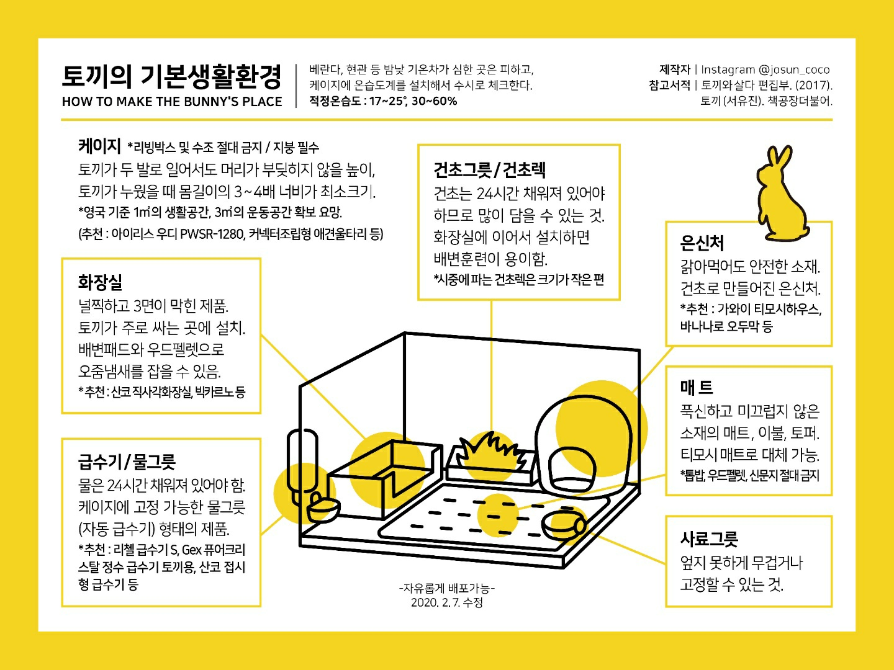
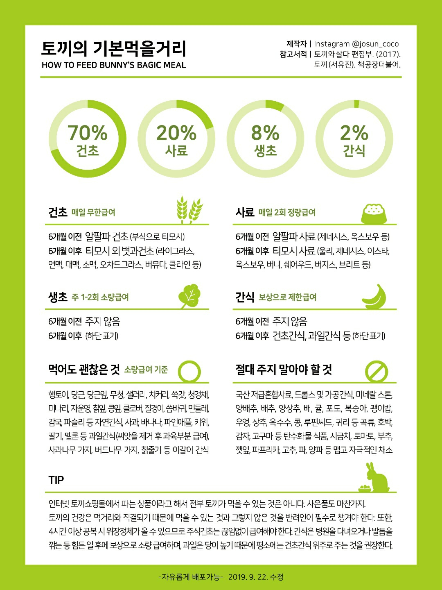

반려토끼 사랑방에 오신 것을 환영합니다
- 입장하시면 인사해주세요.
- 닉네임을 양식에 맞게 변경해주세요.
- 닉네임 양식
- 닉네임/지역형식으로 작성해주세요.
- 예시:꼬미맘(안산)
- 키우고 계신 토야의 이름과 함께 사진을 올려서 소개해주세요.
- 토끼가 없으시다면 방에 찾아온 목적을 말씀해주세요.
- 키우는 토끼가 없지만 토끼가 궁금하신 분
- 또는 토끼를 키워보고 싶거나 키울 예정이실 분
- 토끼 보고 싶어서, 귀여운거 보고 싶어서 등 자유롭게 말씀해주세요.
- 토끼를 키우지 않으시더라도 간단한 자기소개 부탁드립니다.
1. 규정
- 1. 이 방은 경어체를 기반으로 대화하는 곳이니 반말은 사용하지 말아주세요.
- 2. 닉네임은 일반적으로 읽고 쓸 수 있는 형태로 작성하여주시기 바랍니다.
- 2-1.아래 안내되는 [사용할 수 없는 유형의 닉네임]에
나열된 닉네임 유형은 사용하실 수 없습니다.
관리자의 안내/요청이 있을 경우, 관리자가 지정한 유예시한내에 수정하시길 부탁드립니다. 수정하지 않으실 경우, 강제퇴장 처분됩니다.
- [사용할 수 없는 유형의 닉네임]
- 다른 회원과 중복되는 닉네임
- 특수문자로만 이루어진 닉네임
- 한글 초성으로만 이루어진 닉네임
- 특수기호등을 이용하여 화면상에서 공백으로 인지되는 닉네임
- 욕설,혐오표현,음란성등을 내포한 닉네임
- 2-1.아래 안내되는 [사용할 수 없는 유형의 닉네임]에
나열된 닉네임 유형은 사용하실 수 없습니다.
관리자의 안내/요청이 있을 경우, 관리자가 지정한 유예시한내에 수정하시길 부탁드립니다. 수정하지 않으실 경우, 강제퇴장 처분됩니다.
- 3. 정치, 종교 등 개인에 따라 이견이 다를 수 있는 주제는 분쟁이 발생할 수 있으니 자제해 주세요.
- 4. 광고성 메시지를 발송한 회원은 즉시 강제 퇴장 처분됩니다.
- 5. 다른 회원들이 불쾌해 할수 있다 판단되는 항목 및 아래 [경고가 적용되는 내용]이 포함된 대화 적발 시, 개당 1회 이상의 경고 처분됩니다. (사진 이모티콘도 포함됩니다.)
- 경고가 적용되는 발언
- 욕설
- 비방,비하 발언
- 정치,종교에 대해 지나치게 편파적인 발언
- 특정 개인, 단체를 혐오하기 위해 사용되는 표현
- 음란성 내용이 의도된다 판단되는 발언
- 5-1.혐오 발언은 어떠한 형태로든 엄금하고 있습니다. 적발시 사유 불문 강제퇴장 처분됩니다
- 5-2. 음란물 발송 시, 즉각적인 신고와 함께 적발시 사유불문 영구 강제퇴장 처분됩니다
- 5-3. 비난,비방의 내용이 인격부정등에 해당될 경우, 강제퇴장 처분됩니다.
- 5-4. 분쟁을 조장 또는 부추긴 경우, 1회 이상의 경고가 부여되며, 회의 결과 정도가 지나치다 판단되는 경우, 즉가적인 강퇴 처분이 이루어집니다.
- 6. 도배는 여기 말고 벽에다 하시기바랍니다.
- 7. 타인의 저작물(토끼의 사진 등)을 무단으로 수집,사용,도용하는 것은 범죄입니다.
- 토끼의 사진이 귀여워 갖고 싶은 경우 먼저 토끼와 토끼의 집사님에게 허락을 맡아주세요.
2. 권장
- 사진은 되도록 묶어서 보내주세요.
- 단타성 메세지는 채팅방 구성원 모두의 배터리와 데이터를 많이 소모하게 합니다. 또한 가독성이 대단히 떨어지며, 불필요한 알림을 발생시킵니다. 구성원의 배터리와 데이터를 위해, 모두가 읽기 편한 채팅을 위해, 메세지를 전송하실 때는, 내용을 정리하여 보내주시기를 부탁드립니다.
토끼를 키우기 위해
토끼의 기본생활환경
| 조건 | 중요사항 | 설명 |
|---|---|---|
| 환경 |
|
풀어주었을 때, 충분히 뛰어놀 수 있을 만한 공간을 확보하고, 토끼가 놀 때 잘못된 것을 먹지 않도록 주변은 물건이 없도록 한다. |
| 케이지 | ||
| 은신처 | ||
| 화장실 | ||
| 건초그릇,사료그릇 | ||
| 급수기 | ||
| 매트 |
토끼의 기본먹을거리
4. 기타
몽마르뜨 및 올림픽 공원 토끼 관련하여 말씀드립니다.
몽마르뜨, 올림픽 공원 토끼들은 "자유로운 토끼세상"
네이버 카페 회원분들이 관리 중입니다.
그러니 함부로 데려가는 일이 없도록 주의바랍니다.
혹여 봉사하시거나 밥을 주러 가고 싶으신 분들께서는
카페에 들어가셔서 참고하시길 바랍니다.
(토끼급식소, 주의사항 등)
각종 토끼 관련 링크 목록
물품, 먹이
병원 목록
- 본 정보는 네이버 지도를 기반으로 작성되었습니다.
- 병원이름을 누르면 네이버 지도페이지로 이동합니다.
-
아크리스동물의료센터 항목명 데이터 주소 서울 강남구 봉은사로104길 10 동화빌딩 3층 전화번호 02-583-7582 운영시간 - 매일 오전10시부터 오후7시까지
- 수요일,목요일,일요일 휴무
주변전철역 - 9봉은사역 5번 출구
- 2삼성 역 7번 출구
-
인덕원 종합 동물병원 항목명 데이터 주소 경기 안양시 동안구 흥안대로 495 전화번호 031-426-0075 운영시간 - 평일:오전 9시 30분부터 오후9시까지
- 평일 미용실:오전10시부터 오후7시까지
- 일요일 및 공휴일:오전11시부터 오후8시까지
- 일요일 및 공휴일미용실:오전11시부터 오후7시까지
주변전철역 - 4인덕원역 4번 출구
-
자이언츠동물병원 항목명 데이터 주소 부산 동래구 사직북로 26 전화번호 051-512-7582 운영시간 - 평일:오전 9시 30분부터 오후9시까지 진료/입원/수술 야간응급진료
- 공휴일:오전 9시 30분부터 오후9시까지 평일공휴일,국경일,선거일 정상진료
- 공휴일:오전 10시부터 오후5시까지
- 토요일:오전 9시 30분부터 오후9시까지 진료/입원/수술/야간응급진료
- 일요일:오전10시부터 오후5시까지 진료/입원/수술 일요일 정상 진료
주변전철역 - 3사직역 3번 출구